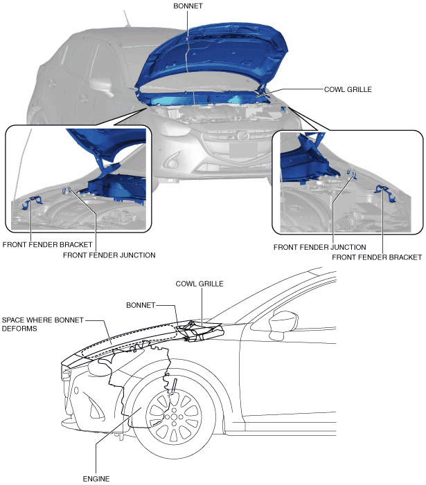
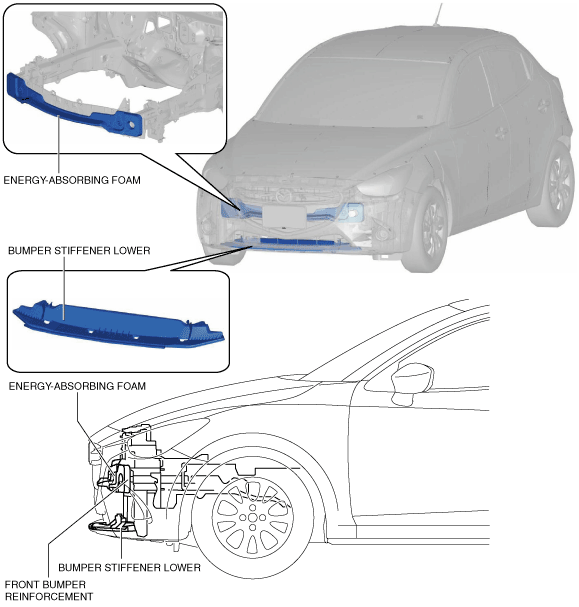

• The pedestrian protection is for reducing impact and injury to pedestrians in a collision with the vehicle.
Construction
Head protection
• An impact energy absorbing structure has been adopted for the following parts to reduce impact to pedestrians in a collision.
― Bonnet
― Cowl grille
― Front fender bracket
― Front fender junction
• The impact energy absorbing structure of each part reduces impact to the pedestrian's head.
• A clearance has been assured between the bonnet and the engine so that the bonnet can deform.

am2zzn00002294
Bonnet
• The bonnet has an impact energy absorbing structure so that impact to pedestrians can be reduced in a collision. For details, refer to the [BONNET]. (See BONNET.)
Cowl grille
• The cowl grille has an impact energy absorbing structure so that impact to pedestrians can be reduced in a collision. For details, refer to [COWL GRILLE]. (See COWL GRILLE.)
Front fender bracket
• The front fender bracket has an impact energy absorbing structure so that impact to pedestrians can be reduced in a collision. For details, refer to [FRONT FENDER BRACKET]. (See FRONT FENDER BRACKET.)
Front fender junction
• The front fender junction has an impact energy absorbing structure so that impact to pedestrians can be reduced in a collision. For details, refer to [FRONT FENDER JUNCTION]. (See FRONT FENDER JUNCTION.)
Leg protection
• The following parts have been adopted to the vehicle frontal area to reduce injury to a pedestrian's legs.
― Energy-absorbing foam
― Bumper stiffener lower

am2zzn00002295
Energy-absorbing foam
• The energy-absorbing foam is equipped to the front of the front bumper reinforcement to reduce impact to a pedestrian's legs. For details, refer to [ENERGY-ABSORBING FOAM]. (See ENERGY-ABSORBING FORM.)
Bumper stiffener lower
• The bumper stiffener lower reduces injury to a pedestrian's legs caused by the pedestrian's legs going under the vehicle. For details, refer to [BUMPER STIFFENER LOWER]. (See BUMPER STIFFENER LOWER.)